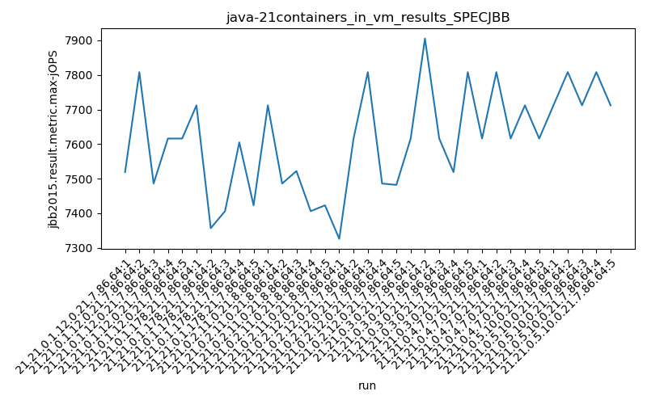
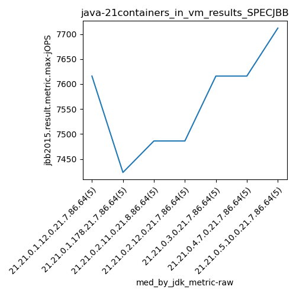
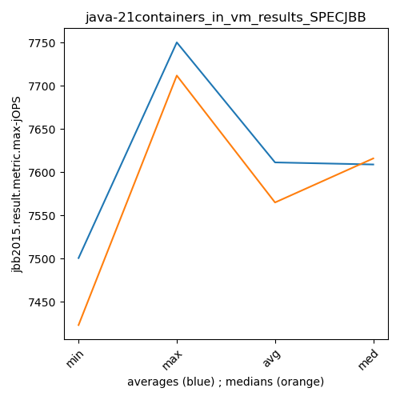
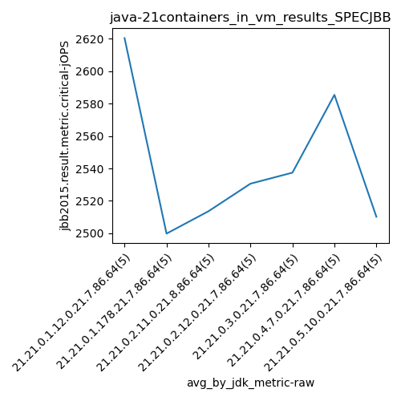
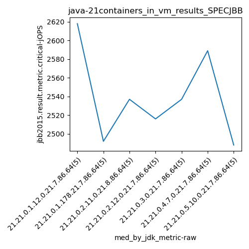

java-21 SPECJBB
Context at bottom
/home/jvanek/git/benchmarks-in-nested-virtualisation-toolchain/final_results/containers_in_vm_results/containers_in_vm_results_JMH
java-21
SPECJBB
/home/jvanek/git/benchmarks-in-nested-virtualisation-toolchain/final_results/containers_in_vm_results/containers_in_vm_results_J2DBENCH
java-21
SPECJBB
/home/jvanek/git/benchmarks-in-nested-virtualisation-toolchain/final_results/containers_in_vm_results/containers_in_vm_results_RADARGUNs3
java-21
SPECJBB
/home/jvanek/git/benchmarks-in-nested-virtualisation-toolchain/final_results/containers_in_vm_results/containers_in_vm_results_SPECJBB
java-21
SPECJBB
containers_in_vm_results_SPECJBB
- containers_in_vm_results_SPECJBB - max-jops
- containers_in_vm_results_SPECJBB - critical jops
containers_in_vm_results_SPECJBB - max-jops
Expected number of java-21 JDKs: 7
1st avgmed_alljdks_metric:
/home/jvanek/git/benchmarks-in-nested-virtualisation-toolchain/final_results/result_processing.py /home/jvanek/git/benchmarks-in-nested-virtualisation-toolchain/final_results/containers_in_vm_results/containers_in_vm_results_SPECJBB jbb2015.result.metric.max-jOPS False
values: [7519, 7808, 7486, 7616, 7616, 7712, 7357, 7406, 7605, 7423, 7712, 7486, 7522, 7406, 7423, 7326, 7616, 7808, 7486, 7482, 7616, 7905, 7616, 7519, 7808, 7616, 7808, 7616, 7712, 7616, 7712, 7808, 7712, 7808, 7712]

Expected number of iterations: 5
final number of values: 35 out of 35
Pass rate: 100.0%
values: (7326, 7905, 7611.4, 7616)

** accuracy from all jdks and runs
more is better
MIN: 7326
MAX: 7905
AVG: 7611.4
MED: 7616
Relative differences 1:
MIN-MAX: 7.0 %
MIN-AVG: 4.0 %
MIN-MED: 4.0 %
MAX-MIN: -8.0 %
MAX-AVG: -4.0 %
MAX-MED: -4.0 %
AVG-MED: 0.0 %
stored to java-21.properties. sort | uniq that!
2nd avgmed_by_jdk_metric:
values: [7609.0, 7500.6, 7509.8, 7543.6, 7692.8, 7673.6, 7750.4]

values: [7616, 7423, 7486, 7486, 7616, 7616, 7712]

values: (7500.6, 7750.4, 7611.400000000001, 7609.0)
values: (7423, 7712, 7565.0, 7616)

** accuracy from all jdks where runs were avged
more is better
MIN: 7500.6
MAX: 7750.4
AVG: 7611.400000000001
MED: 7609.0
Relative differences 1:
MIN-MAX: 3.0 %
MIN-AVG: 1.0 %
MIN-MED: 1.0 %
MAX-MIN: -3.0 %
MAX-AVG: -2.0 %
MAX-MED: -2.0 %
AVG-MED: -0.0 %
stored to java-21.properties. sort | uniq that!
** accuracy from all jdks where runs were medianed
more is better
MIN: 7423
MAX: 7712
AVG: 7565.0
MED: 7616
Relative differences 1:
MIN-MAX: 4.0 %
MIN-AVG: 2.0 %
MIN-MED: 3.0 %
MAX-MIN: -4.0 %
MAX-AVG: -2.0 %
MAX-MED: -1.0 %
AVG-MED: 1.0 %
stored to java-21.properties. sort | uniq that!
containers_in_vm_results_SPECJBB - critical jops
Expected number of java-21 JDKs: 7
1st avgmed_alljdks_metric:
/home/jvanek/git/benchmarks-in-nested-virtualisation-toolchain/final_results/result_processing.py /home/jvanek/git/benchmarks-in-nested-virtualisation-toolchain/final_results/containers_in_vm_results/containers_in_vm_results_SPECJBB jbb2015.result.metric.critical-jOPS False
values: [2611, 2656, 2593, 2618, 2624, 2450, 2516, 2569, 2492, 2472, 2550, 2425, 2537, 2498, 2558, 2473, 2593, 2588, 2483, 2516, 2520, 2537, 2578, 2595, 2457, 2615, 2615, 2547, 2589, 2561, 2488, 2475, 2486, 2576, 2526]

Expected number of iterations: 5
final number of values: 35 out of 35
Pass rate: 100.0%
values: (2425, 2656, 2542.4857142857145, 2547)

** accuracy from all jdks and runs
more is better
MIN: 2425
MAX: 2656
AVG: 2542.4857142857145
MED: 2547
Relative differences 1:
MIN-MAX: 9.0 %
MIN-AVG: 5.0 %
MIN-MED: 5.0 %
MAX-MIN: -10.0 %
MAX-AVG: -4.0 %
MAX-MED: -4.0 %
AVG-MED: 0.0 %
stored to java-21.properties. sort | uniq that!
2nd avgmed_by_jdk_metric:
values: [2620.4, 2499.8, 2513.6, 2530.6, 2537.4, 2585.4, 2510.2]

values: [2618, 2492, 2537, 2516, 2537, 2589, 2488]

values: (2499.8, 2620.4, 2542.4857142857145, 2530.6)
values: (2488, 2618, 2539.5714285714284, 2537)

** accuracy from all jdks where runs were avged
more is better
MIN: 2499.8
MAX: 2620.4
AVG: 2542.4857142857145
MED: 2530.6
Relative differences 1:
MIN-MAX: 5.0 %
MIN-AVG: 2.0 %
MIN-MED: 1.0 %
MAX-MIN: -5.0 %
MAX-AVG: -3.0 %
MAX-MED: -4.0 %
AVG-MED: -0.0 %
stored to java-21.properties. sort | uniq that!
** accuracy from all jdks where runs were medianed
more is better
MIN: 2488
MAX: 2618
AVG: 2539.5714285714284
MED: 2537
Relative differences 1:
MIN-MAX: 5.0 %
MIN-AVG: 2.0 %
MIN-MED: 2.0 %
MAX-MIN: -5.0 %
MAX-AVG: -3.0 %
MAX-MED: -3.0 %
AVG-MED: -0.0 %
stored to java-21.properties. sort | uniq that!
/home/jvanek/git/benchmarks-in-nested-virtualisation-toolchain/final_results/containers_in_vm_results/containers_in_vm_results_RADARGUNs1
java-21
SPECJBB
/home/jvanek/git/benchmarks-in-nested-virtualisation-toolchain/final_results/containers_in_vm_results/containers_in_vm_results_DACAPO
java-21
SPECJBB
pass rates:
containers_in_vm_results_SPECJBB=100.0%
Context:
- containers_in_vm_results
- SPECJBB